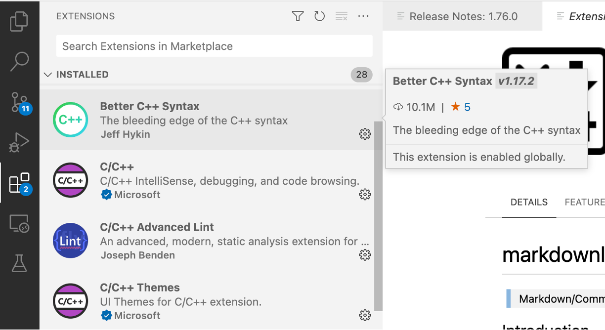

VSC infrastructure
In this course we often use the terms local and remote. Local refers to the physical machine you are working on, i.e. your desktop or laptop. Remote, on the other hand refers to a machine which is, typically, at some other place, and which you are accessing through your local machine and a network connection with the remote machine.
Applying for a guest account (students)
Note
Students of the course 2000wetppr must apply for a guest account to access the university's HPC clusters unless they already have a VSC account. The project work (see Evaluation) requires access to one of the university's HPC clusters. To apply for a guest account, create a SSH public/private key pair (see below how to do that) and send it by e-mail to franky.backeljauw@uantwerpen.be with engelbert.tijskens@uantwerpen.be in cc. A guest account will subsequently be created for you .
Applying for a VSC account (researchers from Flanders)
See Getting acces to VSC clusters.
Create an ssh public/private key pair
A ssh public/private key pair is a way for secure access to a system through the Secure Shell protocol. They are basically two small files with matching numbers. You may think of the public key as a lock. Everyone may see the lock but no one can open the lock without the key, which is the private part of the key pair. The public key (the lock) will be placed on a system you need access to, in this case the Tier-2 supercomputer of our university (currently, that is Vaughan). To access to the supercomputer (that is, open the lock) from, say, your laptop, your need the private key to be stored on your laptop (or a USB memory stick) and pass it to the SSH protocol which will verify the private key and the public key match and, in case they do, open the lock and grant you access.
To create a ssh public/private key pair proceed as follows. Open a 'terminal':
On Windows
The latest builds of Windows 10 and Windows 11 include a built-in SSH server and client that are based on
OpenSSH. You can use the cmd prompt, powershell, or WSL (Windows subsystem for Linux) as a terminal. For older
Windows versions, we recommend installing
mobaxterm.
to generate a ssh public/private key pair.
On Linux
Most Linux distributions have a terminal applicaton.
MacOSX
MacOSX comes with a build in Terminal.app. iTerm2 is a replacement for Terminal.app with many interesting
extra features.
Type the following command at the prompt:
> ssh-keygen -t rsa -b 4096
You will then be prompted for a file location of the public and private key. You may accept the default location by
entering. The default file location will look a bit different, depending on your OS. If the files already exist you
canchoose to overwrite them or to cancel the operation. You might want to change the filename of the key to a more
meaningfull name, e.g. access_vaughan_rsa. Don't use blanks in the filename. Use hyphens (-) or underscores
(_) instead.
Enter file in which to save the key (C:\Users\your_username/.ssh/id rsa) :
C:\Users\your_username/.ssh/id rsa already exists.
Overwrite (y/n)? y
You will then be prompted for a passphrase (twice). A passphrase provides an extra level of protection in case
somebody would steal your private key. Press enter for an empty passphrase. (Passphrases are a little annoying
when using VSCode(see below) for remote development.)
Enter passphrase (empty for no passphrase):
Enter same passphrase again:
Finally you will be notified of where the keys are stored:
Your identification has been saved in C:\Users\your_username/.ssh/id rsa.
Your public key has been saved in C:\Users\your_username/.ssh/id rsa.pub.
For students of 2000wetppr
To obtain a guest account, students must send their public key (and only the public key, the private
key is, well, um, private) to franky.backeljauw@uantwerpen.be with engelbert.tijskens@uantwerpen.be in
cc. The public key is the one with the .pub extension.
Accessing Vaughan
Terminal based access
Vaughan is (at the time of writing) the University of Antwerp's Tier-2 HPC cluster. For terminal based access you
open a terminal (see above) and execute the command:
> ssh -i path/to/my/private-ssh-key your-user-id@login1-vaughan.hpc.uantwerpen.be
Last login: Mon Feb 27 12:40:32 2023 from 143.129.75.140
--------------------------------------------------------------------
Welcome to VAUGHAN !
...
in a terminal. After the command is finished, you can use the terminal as if you were working on the login node. The current working directory will be a location in your file system on the cluster, rather than on your local machine.
Vaughan has two login nodes. login1-vaughan.hpc.uantwerpen.be and login2-vaughan.hpc.uantwerpen.be. You can also
use login-vaughan.hpc.uantwerpen.be, then the system will choose the login node with the highest availability.
Ssh comes with a .ssh/config file that allows you to store the arguments of frequently used ssh commands. E.g.
# file ~/.ssh/config
Host vn1
HostName login1-vaughan.hpc.uantwerpen.be
User vsc20170
IdentityFile /full/path/to/my/private-ssh-key
IdentitiesOnly yes
ForwardX11 yes
ForwardX11Trusted yes
ServerAliveInterval 60
which allows to abbreviate the above ssh command as ssh vn1.
Editing files in terminal based access is performed using terminal editors, e.g. vim or nano. Although vim is
very powerfull, not everyone is comfortable with using it.
IDE based access
Many developers (including me) find code development using terminal based access rather cumbersome. IDEs (Integrated
Development environment) provide a more user friendly GUI based experience.
Visual Studio Code provides a very reasonable user experience for both local aand remote
developement, providing a project directory tree, an editor pane, a debugging pane, a terminal, ... It is very well
suited for our project work. So, install Visual Studio Code on your local machine. (It
is available for Windows, Linux, and MacOSX). Here are some useful VSCode extensions that you should install. Click
the Extensions icon in the activity bar on the left. You can search the Marketplace for interesting extensions.

Necessary extensions
- Remote Development
Highly recommended extensions
- Python extension for Visual Studio Code
- Python extension pack
Recommended extensions for C++
- C/C++
- Better C++ syntax
- CMake
- CMake tools
Recommended extensions for Fortran
- Modern Fortran
Now, after completing the steps below you are good to go to try this tutorial on [Using VSCode for Remote Development] (presentations/TNT-VSCode.pptx).
Setting up a git account (required for micc2 projects)
See signing up for a new GitHub account
Setting up your remote environment
A HPC cluster provides you with many installed software packages. However, none of them are immediately available.
To make a package available, you must load the corresponding software module (this is a different module than
the Python modules). Here is a list of modules you might need for your project work:
Python(= Intel Python 3.8.3), also providesnumpy,f2py,scipy,sympy,pandas, mpi4py, ..., as well as
the corresponding C/C++/Fortran compilers from Intelnumbabuildtools, provides CMakegitgh
Every time you start a remote terminal session, you must load these modules. That is conveniently done by writing
down all the load commands in a file:
# File wetppr-env.sh
# Prepare environment for Python/C++/Fortran development
# You must 'source' this file
module load Python
module load numba
module load buildtools
module load git
module load gh
# list all loaded modules
module list
# allow to install python packages locally
export PYTHONUSERBASE=/data/antwerpen/guest/your_guest_id/.local
mkdir -p ${PYTHONUSERBASE}
export PATH="$PATH:${PYTHONUSERBASE}/bin"
Every time you start a new remote terminal session, you must execute the command:
> source path/to/wetppr-sh
Here is a Python package that will facilitate your project management considerably micc2. Install it in a (remote) terminal.
> pip install --user et-micc2
The --user flag instructs pip to install the package in the directory defined by the environment variable
${PYTHONUSERBASE}. The default install path of pip is a system location where you do not have permissions to
install. ${PYTHONUSERBASE} is a nice workaround.
Note
Don't forget to source wetppr-env first!
Micc2 requires a little setup before it is fully functional. To do so, enter
> micc2 setup
and supply the data the application asks for.
Note
You need a GitHub account before you can setup micc2.
Note
Make sure that you get a personal access token (pat) to allow creating remote repositories at GitHub! Check this.
You will also need pybind11 if you want to use micc2 for building binary extension modules for Python from C++.
> pip install --user pybind11